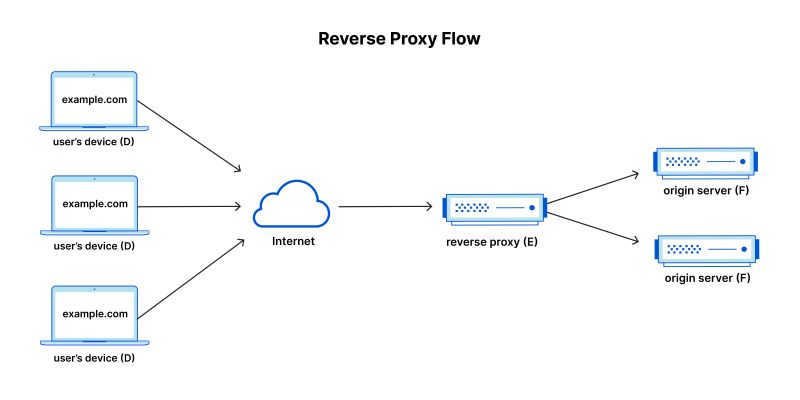
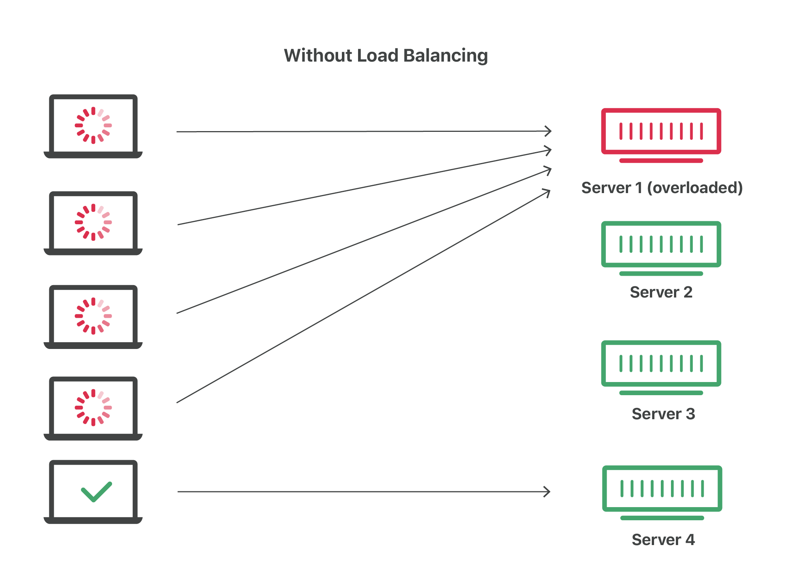
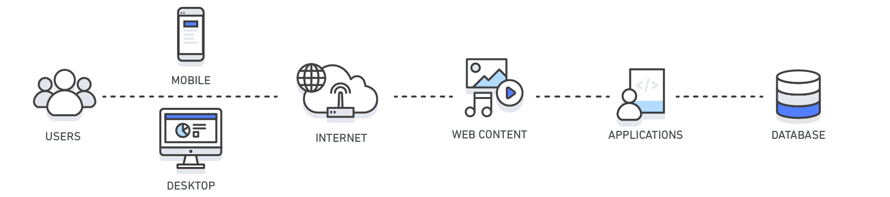

Unofficial - F5 Certification Exam Prep Material > F5 N1-N4 - NGINX OSS - NOT CREATED Source | Edit on
F5N1 - Management¶
Exam summary¶
The F5 NGINX Management exam is one of four NGINX exams candidates are required to pass to achieve the F5 Certified, Administrator, NGINX. The exams may be taken in any order. The NGINX certification is based on NGINX Open Source Software, not NGINX+.
The F5 NGINX Management exam ensures that the candidates have the skills and understanding necessary for day-to-day management of an NGINX web server platform.
This module goes through all the elements evaluated as specified in the exam blueprint and gives insights, details but above all resources to guide candidates in their study for these exams.
The covered material explores the content of the Management exam, axed around understanding the purposes of NGINX as well as being able to demonstrate abilities to understand NGINX structure: both in its configuration organisation and as a Linux process.
Objective - 1.1 Given a scenario identify when to use NGINX¶
1.1 - Describe NGINX as a web server
https://docs.nginx.com/nginx/admin-guide/web-server/web-server/
Slide 11 https://f5u.csod.com/ui/lms-learning-details/app/course/f62cdc17-e0df-4117-820c-6270100981a2
NGINX handling web protocols
One of NGINX’s key feature is its web server functionality. NGINX software indeed implements many features related to the HTTP (web) protocol and can be configured to serve web content, making it describable as a web server. At a high level, configuring NGINX Plus as a web server is a matter of defining which URLs it handles and how it processes HTTP requests for resources at those URLs. At a lower level, the configuration defines a set of virtual servers that control the processing of requests for particular domains or IP addresses.
The most basic web server feature that can be handled by NGINX is serving static content. The following snippet shows a basic example of NGINX configuration file for serving static web content:
http {
server {
root /www/data;
location / {
}
}
}
Receiving this configuration file, NGINX would listen to the HTTP port 80 on
the host machine for incoming connections. Upon receiving HTTP request, it
would serve content from the host’s /www/data directory (for example, a
/www/data/index.html file).
1.1 - Describe NGINX as a reverse proxy
https://www.cloudflare.com/learning/cdn/glossary/reverse-proxy/
https://docs.nginx.com/nginx/admin-guide/web-server/reverse-proxy/
https://nginx.org/en/docs/http/ngx_http_proxy_module.html
Slide 8 and 13 https://f5u.csod.com/ui/lms-learning-details/app/course/f62cdc17-e0df-4117-820c-6270100981a2
What is reverse proxying and why do so
A reverse proxy is a server that sits in front of web servers and forwards client (e.g. web browser) requests to those web servers. Reverse proxies are typically implemented to help increase security, performance, and reliability.
Proxying is typically used to distribute the load among several servers, seamlessly show content from different websites, or pass requests for processing to application servers over protocols other than HTTP.
Reverse proxy flow illustrated. A reverse proxy sits just before the application servers in the classic client-server network architecture. (from https://www.cloudflare.com/learning/cdn/glossary/reverse-proxy/).
How can NGINX be a reverse proxy
When NGINX proxies a request, it sends the request to a specified proxied server, fetches the response, and sends it back to the client. It is possible to proxy requests to an HTTP server (another NGINX server or any other server) or a non-HTTP server (which can run an application developed with a specific framework, such as PHP or Python) using a specified protocol. Supported protocols include FastCGI, uwsgi, SCGI, and memcached.
To pass a request to an HTTP proxied server, the proxy_pass directive is specified inside a location.
location /some/path/ {
proxy_pass http://www.example.com/link/;
}
This example configuration results in passing all requests processed in this location to the proxied server at the specified address. This address can be specified as a domain name or an IP address.
1.1 - Describe NGINX as a load balancer
https://www.cloudflare.com/learning/performance/what-is-load-balancing/
https://nginx.org/en/docs/http/load_balancing.html
https://docs.nginx.com/nginx/admin-guide/load-balancer/
Slide 14 https://f5u.csod.com/ui/lms-learning-details/app/course/f62cdc17-e0df-4117-820c-6270100981a2
What is load balancing in the context of networking and web server
Load balancing is the practice of distributing computational workloads between two or more computers. On the Internet, load balancing is often employed to divide network traffic among several servers. This reduces the strain on each server and makes the servers more efficient, speeding up performance and reducing latency. Load balancing is essential for most Internet applications to function properly.
{kind=link}

How can NGINX be seen as a load balancer
It is possible to use nginx as a very efficient HTTP load balancer to distribute traffic to several application servers and to improve performance, scalability and reliability of web applications with nginx.
The simplest configuration for load balancing with nginx may look like the following:
http {
upstream myapp1 {
server srv1.example.com;
server srv2.example.com;
server srv3.example.com;
}
server {
listen 80;
location / {
proxy_pass http://myapp1;
}
}
}
In the example above, there are 3 instances of the same application running on srv1-srv3. When the load balancing method is not specifically configured, it defaults to round-robin. All requests are proxied to the server group myapp1, and nginx applies HTTP load balancing to distribute the requests.
TODO
1.1 - Describe NGINX as a caching solution
https://aws.amazon.com/caching/
https://docs.nginx.com/nginx/admin-guide/content-cache/content-caching/
https://nginx.org/en/docs/http/ngx_http_proxy_module.html#proxy_cache
https://www.f5.com/company/events/webinars/content-caching-nginx-plus
Caching in the context of the web
Caching is a general concept referring to storing data in a high-speed storage so that this data can be retrieved faster than possible when reaching its original location. In the context of web, caching is crucial and is present at many layers between the actual client software (e.g. web browser) and the backend server or database, storing the content.
{kind=link}
| Layer | Client-Side | DNS | Web | App | Database |
|---|---|---|---|---|---|
Use Case
|
Accelerate retrieval of web content
from websites (browser or device)
|
Domain to IP
Resolution
|
Accelerate retrieval of web content from web/app servers. Manage Web
Sessions (server side) web/app servers. Manage Web Sessions (server side)
|
Accelerate application performance
and data access
|
Reduce latency associated with database
query requests
|
Technologies
|
HTTP Cache Headers, Browsers
|
DNS Servers
|
HTTP Cache Headers, CDNs, Reverse Proxies, Web Accelerators,
Key/Value Stores
|
Key/Value data stores, Local caches
|
Database buffers, Key/Value data stores
|
The above representation comes from the AWS article about caching (https://aws.amazon.com/caching/) and depicts various levels at which caching has influence in the context of web content serving.
How NGINX can be seen as a caching solution
NGINX leverages the caching capabilities of the web in multiple ways. Indeed, NGINX as a reverse proxy or web server sits in a crucial place of web content retrieval pipeline:
- Client-Side caching: NGINX can set and add HTTP headers helping the client side to use caching.
- Web and App content: NGINX can, through its
proxy_cachedirective, cache the results of requests to the backend servers. These cached results can be directly served to new clients, preventing making additional requests to the backend servers. NGINX content caching can be fine-tuned, allowing to best match the application logic. For example, highly dynamic pages may not be cached to make sure the most up-to-date content is served to the clients, while static files can be cached for longer time to prevent requesting the backend server multiple times for identical files. - Web and App connections: another useful caching technique sits at the
transport layer. Thanks to its
keepalivedirectives, NGINX can prevent closing TCP sockets too early and reuse existing sockets instead of re-negotiating a new connection. For the Transport Layer Security, NGINX also has directives to cache SSL sessions and prevent re-negotiating keys and certificates and reuse existing parameters with clients.
These put together allow NGINX to vastly influence the caching of the web content served by an application when it acts as a reverse proxy.
1.1 - Describe NGINX as an API gateway
https://www.redhat.com/en/topics/api/what-does-an-api-gateway-do
https://www.f5.com/company/blog/nginx/deploying-nginx-plus-as-an-api-gateway-part-1
What is an API gateway
An API gateway is an API management tool that sits between a client and a collection of backend services. In this case, a client is the application on a user’s device and the backend services are those on an enterprise’s servers. API stands for application programming interface, which is a set of definitions and protocols for building and integrating application software.
An API gateway is a component of application delivery (the combination of services that serve an application to users) and acts as a reverse proxy to accept all application programming interface (API) calls, aggregate the various services required to fulfil them, and return the appropriate result. In simpler terms, an API gateway is a piece of software that intercepts API calls from a user and routes them to the appropriate backend service.
How can NGINX be used as an API gateway
NGINX can be configured as a perfect API gateway through various configuration aspects:
- Load balancing and upstream definition. As seen before, NGINX can be configured with an upstream servers pool and perform load balancing between the different API servers. This allows to ensure that the API service can scale and match different needs.
- API routes definition. NGINX can be used to define the different API routes available in the same way it defines static web content serving routes. This allows to define broad (using REGEX matching URIs) and precise (using exact matching URIs) endpoints, and control the private or restricted endpoint’s access.
- Request interception and rewriting for handling breaking changes. NGINX can, for example, handle the redirection from legacy API routes to the new ones through HTTP redirect and content rewriting.
- Handling errors. NGINX can interpret HTTP errors received from the backend and display the desired error pages or messages.
- Authenticating endpoints. NGINX can handle restricting access to some endpoints using authentication methods such as API keys or JSON Web Tokens.
- Rate limiting and logging. NGINX can help to secure and enforcing policies on endpoints by using its rate limiting or advanced logging features.
All these aspects make NGINX an efficient and complete solution for placing it as an API gateway.
Objective - 1.2 Explain the NGINX configuration directory structure¶
1.2 - Identify the default NGINX core config file
https://docs.nginx.com/nginx/admin-guide/basic-functionality/managing-configuration-files/
https://stackoverflow.com/questions/19910042/locate-the-nginx-conf-file-my-nginx-is-actually-using
http://hg.nginx.org/pkg-oss/file/tip/debian/debian/nginx.conf
Default configuration when installing NGINX
NGINX configuration is managed through configuration file. After freshly
installing NGINX, a default core config file will be created and configure a
default NGINX web server. By default, the file is named nginx.conf and for
NGINX Plus is placed in the /etc/nginx directory. (For NGINX Open Source,
the location depends on the package system used to install NGINX and the
operating system. It is typically one of /usr/local/nginx/conf, /etc/nginx,
or /usr/local/etc/nginx).
The default configuration may vary depending on your installation source (different distribution maintained APT repositories, NGINX maintained APT repositories, …). The following is installed when NGINX is installed from the official NGINX repository on a Debian system:
user nginx;
worker_processes auto;
error_log /var/log/nginx/error.log notice;
pid /var/run/nginx.pid;
events {
worker_connections 1024;
}
http {
include /etc/nginx/mime.types;
default_type application/octet-stream;
log_format main '$remote_addr - $remote_user [$time_local] "$request" '
'$status $body_bytes_sent "$http_referer" '
'"$http_user_agent" "$http_x_forwarded_for"';
access_log /var/log/nginx/access.log main;
sendfile on;
#tcp_nopush on;
keepalive_timeout 65;
#gzip on;
include /etc/nginx/conf.d/*.conf;
}
The important bit is that there always is a default configuration installed
named nginx.conf which install location depends on your system. There should
only be one install point: the commands nginx -t or nginx -V should display
the actually loaded configuration by NGINX.
1.2 - Identify the included directories/files
http://nginx.org/en/docs/ngx_core_module.html#include
https://docs.nginx.com/nginx/admin-guide/basic-functionality/managing-configuration-files/
https://www.f5.com/company/blog/nginx/deploying-nginx-plus-as-an-api-gateway-part-1#organize-config
https://stackoverflow.com/questions/50107845/what-is-the-order-of-the-config-file-for-nginx
NGINX configuration across multiple files
NGINX configuration can be divided into multiple files across multiple
directories. NGINX has the include directive which matches a certain number
of files (possibly using a wildcard * operator for matching multiple file
names, called a mask) and includes their content at the location of the
include directive in the configuration file.
The nginx -T command shows the list of actually loaded configuration file,
taking into account the include directive.
1.2 - Describe the order of how the included files will be ‘merged’ into the running configuration
http://hg.nginx.org/nginx/file/tip/src/core/ngx_conf_file.c#l821
https://stackoverflow.com/questions/50107845/what-is-the-order-of-the-config-file-for-nginx
NGINX include configuration loading
When making use of the include directive, the included files are like
“merged” (with some caveats as we will see in the next part) in the
configuration. Basically, the included file (child configuration) defines a
configuration that will inherit its parent’s (the file containing the include
[...] directive) variables and directives. However, the parent configuration
will never be able to access elements defined in a child configuration (despite
being in the same context “level”).
For example, let us have the following nginx.conf file:
1 2 3 4 5 6 7 8 9 10 11 12 13 14 15 16 17 18 19 20 21 22 23 24 25 26 27 28 29 30 31 32 | # /etc/nginx/nginx.conf
user nginx;
worker_processes auto;
error_log /var/log/nginx/error.log notice;
pid /var/run/nginx.pid;
events {
worker_connections 1024;
}
http {
include /etc/nginx/mime.types;
default_type application/octet-stream;
log_format main '$remote_addr - $remote_user [$time_local] "$request" '
'$status $body_bytes_sent "$http_referer" '
'"$http_user_agent" "$http_x_forwarded_for"';
access_log /var/log/nginx/access.log main;
sendfile on;
#tcp_nopush on;
keepalive_timeout 65;
#gzip on;
include /etc/nginx/conf.d/*.conf;
}
|
and another web.conf file:
1 2 3 4 5 6 7 8 9 10 11 12 | # /etc/nginx/conf.d/web.conf
log_format web 'Custom logging: $remote_addr';
server {
root /www/data;
access_log /var/log/nginx/web.log main;
access_log /var/log/nginx/web.log web;
location / {
}
}
|
Note the following file hierarchy on the system:
/etc/nginx/
├─ conf.d/
│ ├─ web.conf
├─ nginx.conf
├─ mime.types
The NGINX configuration will load the content from the
/etc/nginx/conf.d/web.conf file because it matches the mask defined in
include /etc/nginx/conf.d/*.conf;: therefore, the server block defined in
the web.conf file will create an HTTP server listening on host’s port 80
and serving static files from the /wwww/data directory. This server
block defined in web.conf will inherit the elements defined in the
nginx.conf file: the http {} context and the general main context.
For example, in web.conf:L6, the access_log directive writes a new log
entry using the format main defined in nginx.conf:L18-20: the child
configuration inherits the parent’s context. However, the log format defined
in web.conf:L2 would not be usable anywhere in nginx.conf: the parent
configuration does not inherit the child’s context, despite being on the same
context “level” – the log_format directive in web.conf:L2 is not in
a sub-block, so in the same context “level” –. However, the newly defined log
format can and is used to write an access log, as defined in web.conf:L7.
Although we do not extend the example to show it, note that sibling
configuration also only inherit their parent’s context: a file
/etc/nginx/conf.d/backend.conf would also not be able to use the
access_log [...] web directive.
Note that this inclusion concept intertwines to some extent with the inheritance concept, please keep reading to understand how the context works.
1.2 - Describe directive inheritance and overriding properties
https://docs.nginx.com/nginx/admin-guide/basic-functionality/managing-configuration-files/
https://blog.martinfjordvald.com/understanding-the-nginx-configuration-inheritance-model/
https://nginx.org/en/docs/http/request_processing.html
Elements of an NGINX configuration file
Before going any further, we will recall the definition of some elements of the NGINX configuration file.
- Directives (simple directives and blocks)
The configuration file consists of directives and their parameters. Simple (single-line) directives each end with a semicolon. Other directives act as “containers” that group together related directives, enclosing them in curly braces (
{}); these are often referred to as blocks. Here are some examples of simple directives:user nobody; error_log logs/error.log notice; worker_processes 1;
- Contexts
A few top-level directives, referred to as contexts, group together the directives that apply to different traffic types: - events - General connection processing - http - HTTP traffic - mail - Mail traffic - stream - TCP and UDP traffic
Directives placed outside these contexts are said to be in the main context. The context defines the available directives and variable to be used for request processing inside the context. For example the
$request_methodvariable can be used inside ahttp {}context block, but not inside astream {}context block, as it would not make sense to have an HTTP method inside any TCP/UDP stream.- Virtual Servers
In each of the traffic-handling contexts, you include one or more server blocks to define virtual servers that control the processing of requests. The directives you can include within a server context vary depending on the traffic type.
For HTTP traffic (the http context), each server directive controls the processing of requests for resources at particular domains or IP addresses. One or more location contexts in a server context define how to process specific sets of URIs.
For mail and TCP/UDP traffic (the mail and stream contexts) the server directives each control the processing of traffic arriving at a particular TCP port or UNIX socket.
The following code block is a sample configuration, commented with details on the different contexts.
user nobody; # a directive in the 'main' context
events {
# configuration of connection processing
}
http {
# Configuration specific to HTTP and affecting all virtual servers
server {
# configuration of HTTP virtual server 1
location /one {
# configuration for processing URIs starting with '/one'
}
location /two {
# configuration for processing URIs starting with '/two'
}
}
server {
# configuration of HTTP virtual server 2
}
}
stream {
# Configuration specific to TCP/UDP and affecting all virtual servers
server {
# configuration of TCP virtual server 1
}
}
Inheritance and properties overriding
In general, a child context - one contained within another context (its
parent) - inherits the settings of directives included at the parent level.
Some directives can appear in multiple contexts, in which case you can
override the setting inherited from the parent by including the directive
in the child context. The following gives an example of override root
directive:
server {
root /home/user/public_html;
location /app {
root /usr/share; # This directive overrides the root directive from parent context.
# This results in /usr/share/app
# (Full URI is always appended.)
}
location /app2 {
# Server context root applies here because it is inherited by
# the parent context.
}
}
This simple rule of thumb however mixes with other NGINX rules which can make surprising the understanding of some specific configuration files.
Notably, there can be confusion when writing directives in a nested location
{} block: NGINX always processes requests by matching the most specific paths.
Therefore, although there can be shorter but valid matches, directives in
locations other than the most specific ones will not get executed. The
following example shows it:
server {
location /calendar {
rewrite ^ /static.php; # Executes unless inner location matches.
location ~ \.php$ {
fastcgi_pass backend; # Outer location context rewrite is not executed.
}
}
}
Also, using inheritance, one must be careful to take into account the
documentation and specifications of each directive which may have
specificities. For example, the rewrite directive is specifically documented
as “executed sequentially in order of their appearance in the configuration
file”. This example shows how:
server {
rewrite ^/booking(.*) /calendar$1 permanent; # Always executes.
location /calendar {
rewrite ^ /index.php; # Can execute in addition to and does not replace server context rewrites.
}
}
Therefore, the directive is not override by the child context redefinition as would other directives.
Objective - 1.3 Demonstrate how to manage user permissions¶
1.3 - Identify user context (i.e. using the configuration file)
https://nginx.org/en/docs/ngx_core_module.html#user
https://stackoverflow.com/questions/42329261/running-nginx-as-non-root-user
The user directive
From the documentation, the user directive allows to define the user and
group credentials used by worker processes. To be noted, the main processes is
run by root by default, because listening on port below 1024 (which is often
done by NGINX) requires root permissions on Linux. There exist ways
<https://stackoverflow.com/questions/42329261/running-nginx-as-non-root-user>
to run the main process as non-root if you create virtual server only listening
on ports above 1024.
1.3 - Describe how and when to give read/write/execute access
https://www.slingacademy.com/article/nginx-user-and-group-explained-with-examples/
https://linuxize.com/post/chmod-command-in-linux/
NGINX users and tasks
As seen before, there are 2 important users (in the sense of a UNIX user) in
the NGINX system: root, which executes the main process and the workers,
which user is defined by the user directive or nobody by default.
On another side, there are the tasks the these processes must run. The main
process being run by the system’s root, it will have sufficient rights to
perform its tasks (listening to sockets, parsing and reading configuration
files, …).
The worker process need to process the actual requests, meaning they must be able to read the static files they are supposed to serve and write logs from their request’s processing.
How to give access
Giving access to certain elements requires following the classic Linux access
control system: any file or folder has a user owner and a group owner. For the
owner, the group owner and the other users (everyone), one defines
authorizations to read, write and execute. Modifying these accesses is as
simple as using the chmod and/or chown commands to respectively modify
the authorization and owner of files.
For example, the following command modifies the owner of the /data/wwww
folder and all the files and folders it contains to make it owned by the
nginx user:
sudo chown -R nginx /data/wwww
The next command makes the file /data/www/index.html readable, writeable
and executable for the owner, but only readable and executable for the group
owner and for everyone else:
sudo chown 755 /data/wwww/index.html
For more information, one should check the referenced links about changing the access rights of Linux files.
When and to what give access
The last step is understanding which accesses should be given. The answer is simply “enough for the workers to do their job” basically. This means that the worker should have at least the read permission to get the content of the files they are serving, and write access to the log files they write their logs to.
Many possible configurations are possible: one should only make sure that the choice of user for the worker does not prevent them from accessing the files they need to access.
Note that observing the logs from the nginx -t command to check the
configuration will give you information about problematic access write
(unwritable access logs for example).
1.3 - Describe how to run NGINX as a specific user type
As describe in user context identification, the user directive in the
configuration file defines the Linux user under which the NGINX worker will
run. Changing this to the desired user allows to run the NGINX as a specific
user. Doing this, one must make sure the access rights are updated accordingly
for the system to run.
1.3 - Describe the relationship between NGINX processes and users
http://haifux.org/lectures/84-sil/users-processes-files-and-permissions/users-perms-lec.html
http://nginx.org/en/docs/control.html
Linux processes
In order to understand this aspect, the reader must first make sure they understand the Linux users and process system. Here are a few reminders from the cited sources.
- Every process running on a Linux system, executes on behalf of a given User.
- Thus, the process may do what this User is allowed to do.
- The process may access the Files that its User-owner may access.
- Every process has unique process ID (= pid), which can be used to control the process.
There of course exist many other subtleties in the Linux files and access managements (symbolic links, set UID and set GID flags) which deserve their own lessons and could not be covered here. The reader may however read through the cited source to learn more.
NGINX processes
You can run the following command on your system running NGINX:
ps axw -o pid,ppid,user,%cpu,vsz,wchan,command | egrep '(nginx|PID)'
ps is the Linux process listing command, the axu option lists all the
processes running on the current system, the -o
pid,ppid,user,%cpu,vsz,wchan,command flag specifies the display format
columns to show as output and finally, the egrep command filters the lines
from the output that refer to NGINX or the first line (containing ‘PID’).
This should give an output looking more or less like this:
PID PPID USER %CPU VSZ WCHAN COMMAND
12146 1 root 0.0 75440 sigsus nginx: master process /usr/sbin/nginx -c /etc/nginx/nginx.conf
13050 12146 nginx 0.0 182548 do_epo nginx: worker process
13051 12146 nginx 0.0 76032 do_epo nginx: worker process
You can here see the main process, running under the root user, while 2
worker processes are running under the nginx user. The NGINX processes are
Linux processes, hence this is why they run on the behalf of Linux users, in
our case, the root and the nginx users.